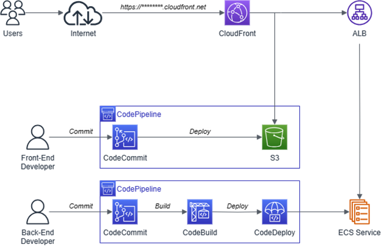

지방2024제2과제⏱ 4시간문제
Automation
WorldSkills의 Front-End/Back-End 애플리케이션에 대한 DevOps 업무로, CloudFront·S3 정적 호스팅과 ECS Fargate·ALB 기반 백엔드를 구성하고 CodeCommit·CodeBuild·CodeDeploy·CodePipeline으로 CI/CD를 자동화하는 과제입니다.
VPCECSFargateELBCloudFrontS3CodeCommitCodeBuildCodeDeployCodePipeline
개요
당신은 WorldSkills의 Front-End Application과 Back-End Application에 대한 DevOps 업무를 맡았습니다. 주어진 요구사항과 클라우드의 설계원칙인 고가용성, 확장성, 비용, 보안 등을 고려하여 인프라를 구축합니다.

아키텍처 다이어그램 (CloudFront·S3·ALB·ECS와 CodePipeline 흐름)
사용 기술
| 분류 |
항목 |
| AWS |
VPC, ECS, ELB, Fargate, CodeCommit, CodeBuild, CodeDeploy, CodePipeline, S3 |
| 개발언어/프레임워크 |
HTML, Java/Gradle/Spring |
선수 유의사항
주의
※ 다음 유의사항을 고려하여 요구사항을 완성하시오.
- 문제에 제시된 괄호박스 < > 는 변수를 뜻함으로 선수가 적절히 변경하여 사용해야 합니다.
- 문제 풀이와 채점의 효율을 위해 Security Group의 80/443 Outbound는 Anyopen하여 사용할 수 있도록 합니다.
- Bastion EC2는 채점 시 사용되기 때문에 종료되거나 연결 문제, 권한 문제 등으로 발생할 수 있는 불이익을 받지 않도록 주의하시기를 바랍니다.
- 모든 리소스는 서울(ap-northeast-2) 리전에 구성합니다.
- 제공자료를 수정해도 무관하나, 채점 전에는 반드시 처음 제공받은 제공자료로 설정해야 합니다.
3. Networking
- 클라우드 인프라 구성을 위하여 기본적인 네트워크 구성을 시행합니다. 부록 1의 정보를 참고하여 AWS VPC를 생성합니다.
4. Bastion Server
- EC2를 사용하여 Bastion 서버를 생성합니다.
- Bastion 서버의 IP는 재부팅 후에도 변경되어서는 안되며, 종료하지 않도록 각별히 주의합니다.
- 또한 SSH를 사용해 서버에 접속하므로 SSH로 접근이 가능해야 합니다.
- 해당 인스턴스의 root 계정에서 AWS CLI를 사용하면 AWS의 모든 권한을 사용할 수 있어야 하며, 패키지들은 반드시 버전과 권한 등의 문제가 없어야 합니다.
| 항목 |
값 |
| Instance Type |
t3a.small |
| OS Image |
Amazon Linux 2023 |
| Name Tag |
skills-bastion-ec2 |
| Packages |
AWS CLI v2, cURL, jq |
5. Application
- 제공자료로 주어진 애플리케이션은 2개입니다.
- Front-End 애플리케이션은 HTML로 개발된 Single Page Application입니다.
- Back-End 애플리케이션은 Java 17과 Gradle, Springboot로 개발된 RESTFul API입니다.
- Front-End 애플리케이션은 HTML 파일을 배포해야 하며, Back-End 애플리케이션은 빌드를 한 후, 그 결과물을 배포해야 합니다.
- Back-End 애플리케이션은 TCP 8080으로 접속할 수 있으며, /api/, /api/time, /api/health 총 3개의 API가 존재합니다.
6. Static Web Hosting
- Front-End 애플리케이션을 S3에 업로드합니다.
- CloudFront를 사용해 정적 웹 호스팅을 실시하고, 외부에서 해당 애플리케이션을 문제없이 접속할 수 있도록 구성해야 합니다.
- 캐싱을 활용해 사용자들에게 쾌적한 환경을 제공하는가 반면, 배포 등으로 Front-End가 업데이트되면 반드시 최신 화면을 보여줘야 합니다.
- 한편, Back-End 애플리케이션도 /api/*에 대한 요청을 CloudFront를 통해 제공해야 하며, 캐싱을 실시해서는 안됩니다.
| 항목 |
값 |
| S3 Bucket Name |
skills-frontend-<랜덤 문자 4자리> |
| CloudFront Protocol |
HTTPS를 통하여 접근할 시 문제가 없도록 구성 |
| CloudFront Origin |
S3 Bucket, ELB |
| Edge |
한국뿐만 아니라 전 세계의 유저가 빠른 속도로 접근이 가능하도록 구성 |
| Tag |
Name=skills-frontend-cdn |
7. Container Orchestration
- Back-End 애플리케이션은 ECS 기반의 Fargate에서 운용합니다.
- Fargate는 Private Subnets에서 운용해야 합니다.
- Auto Scaling이나 Logging은 별도로 구성하지 않습니다.
| 항목 |
값 |
| ECS Cluster Name |
skills-ecs-cluster |
| ECS Fargate Resource |
0.5vCPU, 1GB Memory |
| ECS Service Name |
backend |
| ECS Task |
2개 |
8. Load Balancing
- ECS에서 운용중인 Back-End 애플리케이션을 외부에서 접근할 수 있도록 ALB를 구성합니다.
| 항목 |
값 |
| Load Balancer Type |
Application Load Balancer |
| Load Balancer Name |
skills-backend-alb |
| Load Balancer Scheme |
internet-facing |
| Load Balancer Protocol |
HTTP |
| Load Balancer Port |
80 |
9. Version Control
- CodeCommit을 사용해 버전관리와 CI/CD에 사용합니다.
- Front-End와 Back-End를 위해 각각 1개씩 총 2개를 생성하며, 제공자료를 압축 해제한 후, 각 Repository의 Root(/)에 업로드합니다.
- Repository에는 제공자료 이외 다른 파일이 있어도 무관합니다. 다만, 채점 전 반드시 제공자료로 제공받은 내용이 그대로 존재해야 합니다.
| 항목 |
값 |
| Front-End Repository Name |
skills-frontend-code |
| Back-End Repository Name |
skills-backend-code |
| Default Branch |
main |
10. Continuous Integration
- CodeBuild를 사용해 CI에 사용합니다.
- SpringBoot 기반의 Back-End 애플리케이션을 빌드합니다.
- 로깅을 반드시 활성화해야 합니다.
| 항목 |
값 |
| Back-End Project Name |
skills-backend-build |
11. Continuous Delivery
- Front-End 애플리케이션은 CodeCommit에 업로드된 HTML 파일을 S3에 업로드해 CloudFront를 통해 접근할 수 있어야 하며, Back-End 애플리케이션은 CodeDeploy를 사용해 ECS Service에 배포해야 합니다.
| 항목 |
값 |
| Back-End Application Name |
skills-backend-app |
| Back-End Deployment Group Name |
skills-backend-dg |
| Deployment Type |
Blue/Green |
| Deployment Target |
ECS의 backend Service |
12. CI/CD Pipeline
- CodeCommit의 main Branch에 변경사항이 발생하면 자동으로 CodePipeline이 동작할 수 있도록 구성해야 합니다.
- Front-End는 Source, Deploy 이외에 다른 Stage가 있어도 무방하며, Back-End는 Source, Build, Deploy 이외의 Stage가 있어서는 안됩니다.
- CodeCommit에 변경사항이 발생한 이후 최대 15분 이내에 애플리케이션 배포가 모두 완료되어야 합니다.
| 항목 |
값 |
| Front-End Pipeline Name |
skills-frontend-pipeline |
| Front-End Source Stage |
CodeCommit(skills-frontend-code)의 main Branch |
| Front-End Deploy Stage |
S3(skills-frontend-<랜덤 문자 4자리>) |
| Back-End Pipeline Name |
skills-backend-pipeline |
| Back-End Source Stage |
CodeCommit(skills-backend-code)의 main Branch |
| Back-End Build Stage |
Codebuild(skills-backend-build) |
| Back-End Deploy Stage |
CodeDeploy(skills-backend-app/skills-backend-dg) |
Reference
부록 1
VPC 정보
| Name Tag |
CIDR |
skills-vpc |
172.16.0.0/16 |
Subnets 정보
| Name Tag |
CIDR |
Availability Zone |
skills-public-subnet-a |
172.16.1.0/24 |
ap-northeast-2a |
skills-public-subnet-b |
172.16.2.0/24 |
ap-northeast-2b |
skills-private-subnet-a |
172.16.11.0/24 |
ap-northeast-2a |
skills-private-subnet-b |
172.16.12.0/24 |
ap-northeast-2b |
Route Tables 정보
| Name Tag |
Subnet |
Gateway |
skills-public-rtb |
skills-public-subnet-a
skills-public-subnet-b |
Internet Gateway
(Name Tag : skills-igw) |
skills-private-rtb-a |
skills-private-subnet-a |
NAT Gateway
(Name Tag : skills-nat-a) |
skills-private-rtb-b |
skills-private-subnet-b |
NAT Gateway
(Name Tag : skills-nat-b) |